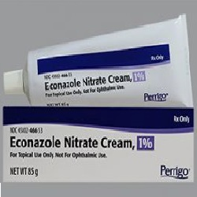

Econazole

Azoleအုပ်စုဝင်ဆေးတစ်မျိုးဖြစ်ပါတယ်။
မှိုရောဂါပိုးများ ပွားများခြင်းကို တားဆီးပေးခြင်းဖြင့် မှိုစွဲနာအတွက် သုံးပါတယ်။ ပိုးပွားနှုန်းနဲ့ ပျံ့နှုန်းကိုလျှော့ချပေးပြီး မှိုစွဲလက္ခဏာကို သက်သာစေပါတယ်။
လိမ်းဆေး၊ သောက်ဆေး၊ ဆေးရည် ပုံစံအမျိုးမျိုး ရှိပါတယ်။
ဘယ်မှာသုံးလဲ
- ခြေချောင်းကြားမှိုစွဲခြင်း
- အခြားမှု စွဲယားနာများ
ဘယ်လိုသုံးရမလဲ
- လိမ်းဆေးအနေနှင့် အသုံးပြုပါတယ်။
- ဆရာဝန်ညွှန်ကြားသည့်အတိုင်း အသုံးပြုနိုင်ပါတယ်။
- အရေပြားပေါ်တွင်သာလိမ်းပါ
- ဆေးလိမ်းပြီးသောအခါ လက်ကို သေချာစွာပြန်ဆေးပါ။ လိမ်းထားသောနေရာကို ဆရာဝန်ညွှန်ကြားသည်မှ လွဲ၍ အုပ်ထားခြင်း၊ ပတ်တီးစီးထားခြင်း မပြုပါနှင့်။
- ရောဂါသက်သာသည်အထိ ပုံမှန်အသုံးပြုရန် လိုအပ်ပါတယ်။
မျက်လုံး၊ နှာခေါင်း၊ ပါးစပ်၊ မိန်းမကိုယ် စသည်တို့ အတွင်းပိုင်းနှင့် ဆေးထိတွေ့မှုရှိလျှင်ရေဖြင့် စင်ကြယ်အောင် ပြန်ဆေးပါ။
ဘေးထွက်ဆိုးကျိုးဘာတွေရှိလဲ
- လူအများစုမှာ ဘေးထွက်ဆိုးကျိုး ဆိုးဆိုးဝါးဝါး ခံစားရလေ့မရှိပါ။
အောက်ပါအချက်များရှိလာလျင် ဆရာဝန်ဆီချက်ချင်းသွားသင့်ပါတယ်။
- ဆေးမတည့်ခြင်း(ယားယံခြင်း၊ ရောင်ရမ်းခြင်း၊ အင်ပျဉ်ထခြင်း)
- ဆေးလိမ်းသောနေရာတွင် ပူလောက်ခြင်း၊ စပ်ခြင်း တို့ဖြစ်ပေါ်က ဆရာဝန်နှင့်ပြန်ပြပါ။
ဘာတွေသတိထားရမလဲ
- ဆေးတစ်မျိုးမျိုးနှင့် ဓာတ်မတည့်ဖြစ်ဖူးလျှင် ဆရာဝန်ကိုပြောပြပါ။
- မိမိသောက်နေသောဆေးများ၊ ခံစားနေရသော ရောဂါများကို ဆရာဝန်ကို ပြောပြထားရပါမယ်။
- ကိုယ်ဝန်ဆောင်နှင့် နို့တိုက်မိခင်များတွင် ဤဆေးကိုသုံးရန် အကြောင်းရင်း ခိုင်မာမှသာ သုံးသင့်ပါတယ်။
ဆေးအာနိသင်ဘယ်လိုရှိလဲ
- လိမ်းဆေးအနေနှင့် အသုံးများခြင်းကြောင့် အခြားဆေးများနှင့် အပြန်အလှန်သက်ရောက်မှု နည်းပါတယ်။
- မိမိအသုံးပြုနေသော ဆေးများကို ဆရာဝန်ကို ပြောပြထားရပါမယ်။
ဆေးသောက်လွန်ရင်ဘာတွေဖြစ်မလဲ
- ဆေးအရှိန်လွန်ပြီး အသက်ရှုကျပ်ခြင်း၊ သတိမေ့ခြင်းတို့ ဖြစ်ပါက အရေးပေါ် ကုသမှုလိုပါတယ်။
- ဆေးတွေကို ဘယ်ဆေးမဆို ဆရာဝန် ဒါမှမဟုတ် တတ်ကျွမ်းနားလည်တဲ့ ကျန်းမာရေးဝန်ထမ်းတွေရဲ့ ညွှန်ကြားချက်အတိုင်း တိတိကျကျ သောက်သင့်ပါတယ်။
- မိမိသဘောနဲ့ဆေးရပ်လိုက်တာမျိုး မလုပ်သင့်ပါဘူး။
- ဘေးထွက်ဆိုးကျိုး ပြင်းပြင်းထန်ထန် ခံစားရရင်တော့ ဆရာဝန်နဲ့တိုင်ပင်ဖို့ လိုအပ်ပါတယ်။
Source– ဒေါက်တာချစ်စန္ဒီကျော်